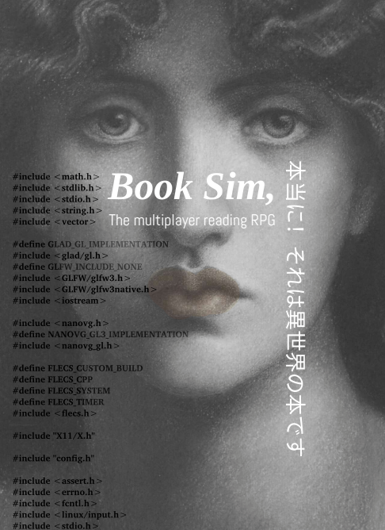

book sim online
My first glimpses of the book simulator emerged in the structure of transcendental daydreams in 2020 while living a neo-primitive life in HabLab, reading on my reMarkable 2.
An innocent inquery into the Babylonian-depths of my backpack-library: books, open source hardware, and artificial general intelligence.

the future field of book simulation or fantasy hardware...
(the rest of this article is just open source notes for a rough draft, I am actively advancing this field by writing a NeurIPS paper on the topic.
An RPG to facilitate emergence of consciousness through individuation.
Books as embodied game environments for multi-agent unbounded open-ended learning within a 'reading RPG' context.

What is the best thing to read?
Hypothesis: Some things are better to read than other things.
SoTA AI can memorize books (no problem since memory is affordable), QA at human level
What can't it do in terms of reading books at human level?
AI lacks imagination (possible to use generative AI to output sensory artifacts, but priority is subjective consciousness: creativity, empathy, etc)
Using book simulations to create consciousness
- Vernor Vinge + A User's Guide to Vacuum Technology (ie pair fiction and nonfiction)
- Personality Engineering
- Wikipedia references to everything
- Original observation
- Automate coding
- Lookup documentation (recursively summarizing)
- Write simple example as a unit test proof
- Once proof is verified, integrate
- ZeroC with Flecs ie (zero concept for ECS implementation)
- Reading fiction vs non-fiction PASTA paradigm